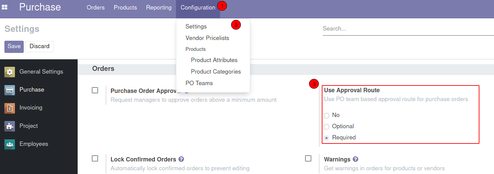
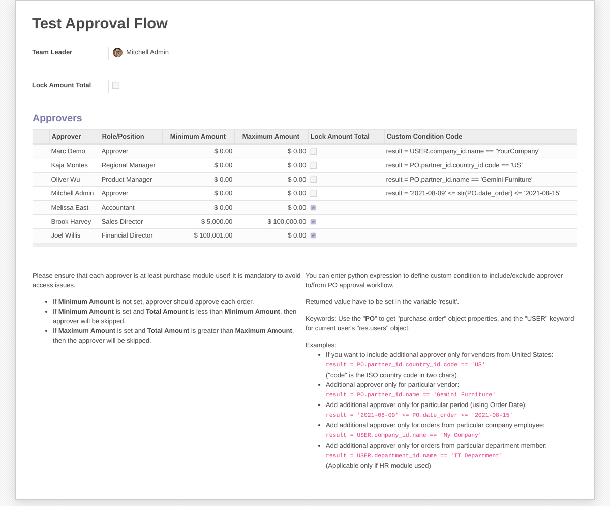
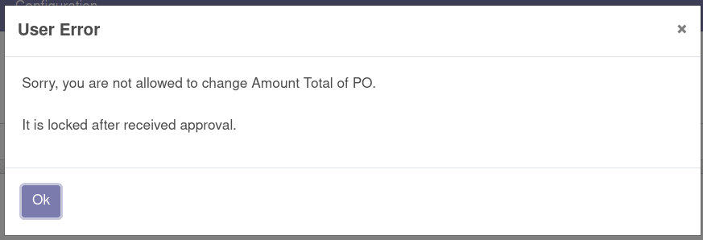
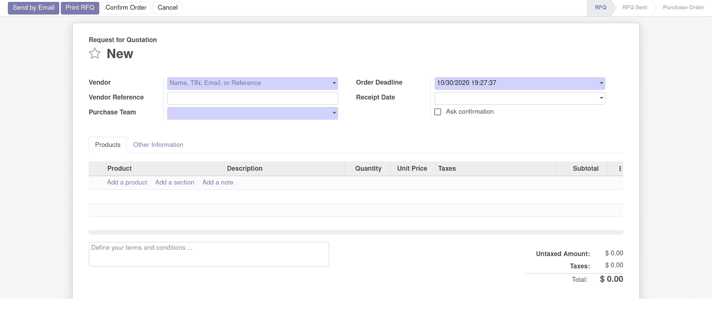
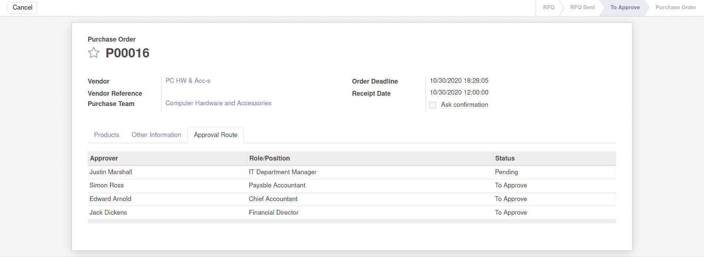
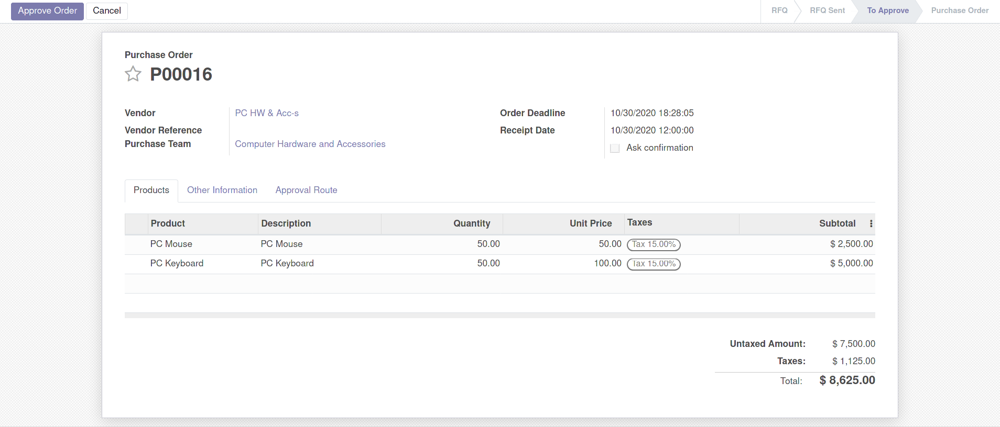
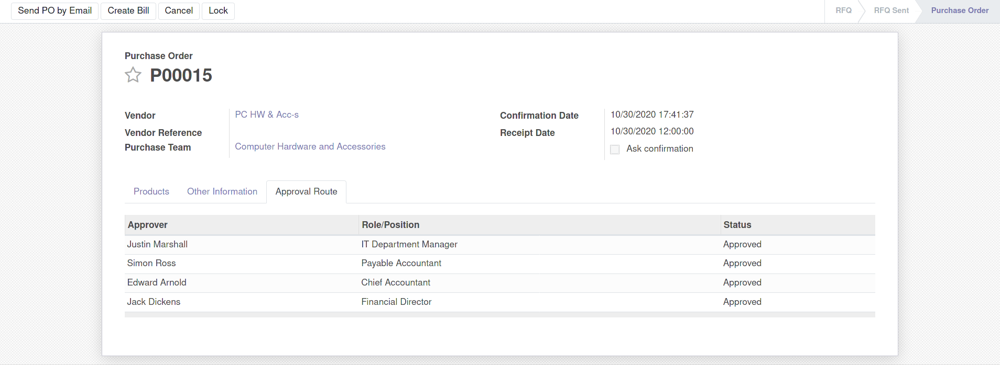

The form looks like in the screenshot below:
Enter name of the team, select team leader and add approvers.
Optionally you can set Minimum or Maximum Amount for each person.
Also you can enter python expression to define custom condition to include/exclude approver to/from PO approval workflow.

Team Leader is the Purchase Module Administrator who is allowed to manage own purchase team.
If Lock Amount Total checkbox is enabled the system prevents updating order lines after
confirming
order.
As Approver can be selected any User of the Purchase Module. Also, you should enter Role/Position
of the Approver. If information is available, system will try to set approver`s Job Title or Job
Position
in this field.
The system generates multi-level approval route using Total Amount value of PO and Minimum/Maximum Amount for
Approver.
Also you can enable the option Lock Amount Total. If this checkbox is enabled user can not update order lines after approval. An error will be triggered if the system detects a change in the Total. 

After creating PO user clicks the "Confirm" button. After that a request to approve to the first approver will be sent:

Pending - is the status for current approver

Each approver will be requested to approve PO step by step. After the last approval PO is moving to the "Purchase Order" state and approval process is closing.

If you want to display detailed dashboard based on all purchase orders, please look that module: Purchase Dashboard
Please note that to send email notifications to approvers an outgoing email server should be configured.
If your Mail Transfer Agent (MTA) supports SRS (Sender Rewriting Scheme), your users can send and receive notification. However, that is more complex and requires more technical knowledge.
Instead, you can install additional module to Replace "Email From" and "Reply To" parameters of outgoing emails.